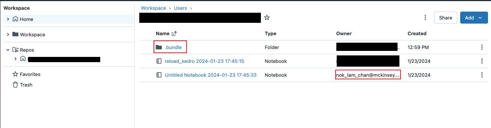

## Summary
Although there are not much documentation on the Internet yet, it's fairly easy to combine the two. It would be nice to automate some of the manual steps, but it is challenging because both takes a template approach and it's always hard to merge them automatically.(Disclaimer: This is not an official documentation).
This post describe the process of using Databricks Assets bundle, deploy the notebook to a Databricks workspace and runs the notebook as a Databricks Job.
Requirements
I test this with the following dependencies: - kedro==0.19.2 - databricks-cli==0.214.0 # Installation guide: https://docs.databricks.com/en/dev-tools/cli/install.html
First, I create a new kedro project which contains a spark pipeline that are ready to run in databricks with kedro new -s databricks-iris. The workflow of using Databricks worksapce to develop Kedro project is documented here.
Next, you need to have the Databricks CLI installed, run this command to create a Databricks Assets Bundle template.
databricks bundle init, it will prompt you for a few things. For testing purpose, I answer yes for all questions. The resulting folder look like this: 
This create yet another project template. Both kedro new and databricks bundle init assume you are creating new project. Since we have a Kedro project already, you don’t need the project related files. i.e. requirements-dev.txt, setup.py and src/<project_name>. You can then move everythin from a Kedro project inside the bundle_example folder so that they share the same root level. i.e. pyproject.toml (create by Kedro) should be in the same level as databricks.yml
`databricks bundle deploy -t dev`
Error: terraform apply: exit status 1
Error: cannot create job: default auth: cannot configure default credentials, please check https://docs.databricks.com/en/dev-tools/auth.html#databricks-client-unified-authentication to configure credentials for your preferred authentication method. Config: host=https://adb-4127266075722018.18.azuredatabricks.net. Env: DATABRICKS_HOST
with databricks_job.my_project_job,
on bundle.tf.json line 77, in resource.databricks_job.my_project_job:
77: }I try to submit a job immediately after creating the bundles, the error suggests that I need to create a developer token to submit job to Databricks locally. Go to Databricks workspace -> User Settings -> Developer -> Generate New
Run in terminal: export DATABRICKS_TOKEN=<your-token>
Submit the job
After this, I run databricks bundle deploy -t dev again and I see this in my workspace.

If you name your bundle my_project, you should see a my_project_job.yml. You will need to update the tasks and the notebook_path to the targeted notebook. databricks bundle run -t dev my_project_job
For example:
tasks:
- task_key: notebook_task
job_cluster_key: job_cluster
notebook_task:
notebook_path: ../src/notebook.ipynbAfter this, I can submit a job and see this on Databricks. Unfortunately I cannot get it running because I have permission issue to create a Databricks Job, but I can see the job request on the UI.
Appendix:
The databricks asset bundle use entrypoints for deployment.
entry_points={
"packages": [
"main=my_project.main:main"
]
},